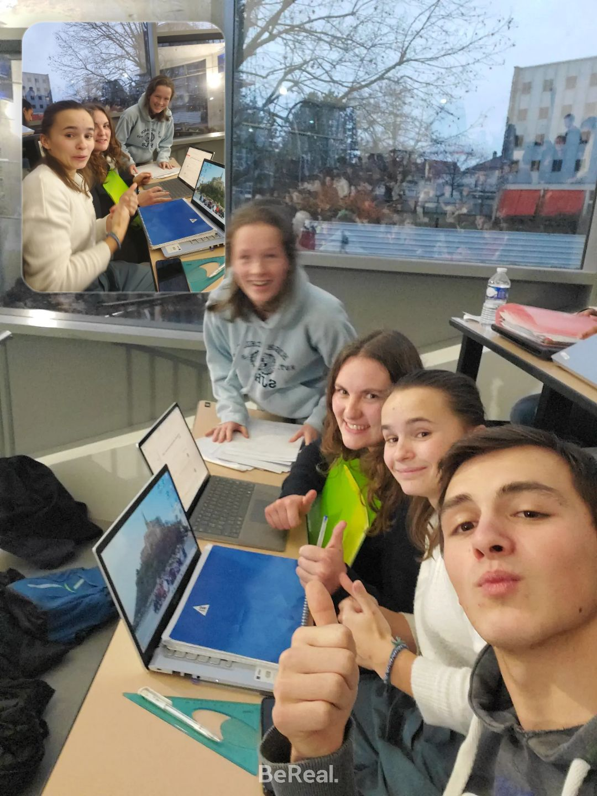

Nous voilà en première année, dans mes souv enirs, nous nous sommes rencontrés la première fois dans l'amphithéâtre.
Nous étions en partiel de remise à niveau de maths et on s'était parlé pour je ne sais plus quelle raison.
Mais ça devait sans doute être très intéressant comme toujours. J'avais rigolé dans ma tête parce que je me disais
que tu avais beaucoup trop d'énergie.
Je n'ai pas de photo du début de première année car on n'était pas dans la même classe.
Je pense que l'on a commencé à se rapprocher au badminton et par l'intermédiaire de Sophie qui était alors copine avec Enora
qui faisait partie de ta classe, même si on s'est réellement rapproché à partir du ski.

Eh voilà la première photo que j'ai de nous. Avec nos meilleures amies, devant qui fais le con c'est moi, ensuite Sophie qui était
dans ma classe puis, Enora la toulousaine qui se revendique tout le temps bretonne
et pour finir (la meilleure pour la fin ?? nan peut-être pas abuser...) Mathilde qui n'a pas cessé d'amuser la galerie.
C'est un groupe que l'on a gardé durant 3 ans avec lequel on a vécu
tellement d'histoires différentes : Le ski, la Bretagne, escape game, crous, sorties, soirées mais aussi du travail ! Il fallait bien valider
notre semestre et éviter les rattrapages ! Ce groupe je ne l'oublierai jamais. C'est avec lui que l'on a passé la majorité de notre temps,
avec lequel on a rigolé et l'on s'est amusés. Et même si ça n'a pas toujours été un long fleuve tranquille,
il est resté intact après tout ce qui s'est passé et c'est peut-être ça le plus important. Qui sait, peut-être que dans
5, 10 ou 20 ans, tout le monde se connaîtra encore et on continuera de se voir. Peut-être que les enfants de chacun se connaîtrons.
PS : on pourra quand même noter que j'ai sorti aucune feuille et qu'à l'inverse t'en as déjà sorti des milliards pas triées je suis sûr.

En février 2024, nous voilà partis au ski !
La deuxième photo que j'ai de toi c'est lorsque tu fais la sieste au ski, un hasard ? je ne pense pas...
C'est même très révélateur de la personne : une feignasse...
Eh oui, tu n'as pas changé, tu as toujours les mêmes passions dans la vie... c'est beau !
Bon même si tu as l'air de profiter du soleil, entre nous tu te cailles avoue ??
T'aurais dû me demander un câlin, le problème aurait été vite réglé.

Bon oui d'accord tu n'étais pas la seule à faire la sieste. C'est une passion que je partage aussi qui n'est pas qu'à toi. C'est pas de ma faute si je suis épuisé, c'était fatiguant de vous supporter à longueur de journée...

Pour notre défense on a aussi été très productif : on avait fait un magnifique bonhomme de neige. Cela n'aurait pas été possible sans la sieste, il faut le reconnaître. On ne lui avait même pas donné de prénom d'ailleurs. Désormais il s'appelera Moris.

Alalala le sept et demi ! Une belle découverte, c'est là qu'on a appris les règles pour la première fois. Désolé mais le rôle de la banque c'est trop difficile. Trop de responsabilités ! Heureusement que je ne gère pas de banque dans la vraie vie car elle aurait très vite fait fallite.

N'oublions pas l'incontournable du ski, ce pourquoi on est principalement venus, le repas phare de l'hiver... j'ai nommé : LA RACLETTE🤤🤤. On s'est fait plaisir avec celle là ! Qu'est-ce que c'est bon en même temps ! Encore un bon souvenir qu'on gardera en mémoire.

Je ne sais pas si tu te rappelles, mais je m'en souviens encore : La première fois que j'ai dormi sur ton épaule c'était à ce moment là, c'était au retour du ski, on était crevés et j'avais posé ma tête sur ton épaule. Je ne sais même plus si je t'avais demandé, j'espère que oui mais comme on était épuisé j'avais peut-être pris mes aises et mis ma tête sur ton épaule sans demander. A l'aise le garçon ... Heureuement pour moi, tu ne m'as pas rejeté, ça me faisait un bon oreiller.

Je ne sais pas si tu te rappelle de cette soirée, mais on était tous venus chez toi, même Romain Grenier était venu, quelle incruste ! Bon il a quand même montré qu'il savait rouler du cul et ça c'était bien marrant. Je ne sais pas si on avait fait d'autres soirées avant celle là, c'était peut-être même la première. C'était très chouette, comme d'habitude avec toi tu me diras...

En attendant le châlet

Au sommet de la montagne ⛰️

Un magnifique bonhomme de neige😍

Juste une bande de BG

Un chocolat chaud qui donne le sourire 😁

Encore une bande de BG